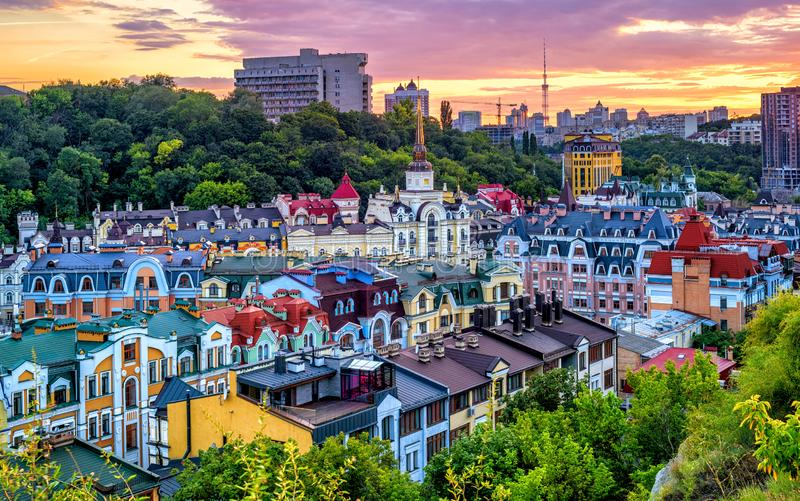

Hello. I'm from Ukraine so I'm going to tell you about my country
Ukraine

In the embrace of Ukraine's nature, beauty flourishes like a symphony, where rolling fields dance with wildflowers, rivers whisper melodies of tranquility, and mountains stand as majestic guardians of an untamed paradise
Cities of Ukraine
Kharkiv
Kharkiv: Kharkiv is the largest city in eastern Ukraine. It is the center of industry, science and culture in the region. Kharkiv is famous for its architecture, parks and gardens.
Kyiv
Kyiv: Kyiv is the capital of Ukraine and the largest city of the country. It is famous for its rich history and culture as well as its beautiful architectural buildings. Kiev is also an important political, economic and cultural center of the country.
Lviv
Lviv: Lviv is the cultural capital of Ukraine and one of the most popular tourist destinations in the country. It is famous for its beautiful architecture, narrow streets and cozy cafes. Lviv is also known for its rich history and culture.
Culture
The culture of Ukraine is very rich and diverse. It was formed as a result of the influence of different ethnic groups that have lived on this territory for many centuries. Ukraine has a rich cultural heritage, which is manifested in traditional costumes, folk songs and dances, folk crafts and architecture.
One of the most famous art forms in Ukraine is the folk song. Ukrainian folk songs are known for their beauty and melody. There are also very popular in Ukraine traditional dances like gopak, kozachok and arkan.
Ukrainian culture is also known for its traditional costumes. They are bright and colorful, and reflect the long history of this country. Ukrainian embroidered shirts, which have become a symbol of national costume, are now very popular not only in Ukraine but also around the world.
Also in Ukraine is a developed craft. In traditional crafts, such as pottery, embroidery, forging, woodcarving and pottery, centuries-old traditions and national culture are passed on.
Ukrainian architecture is also very beautiful and diverse. It reflects the history of this country and its culture. The most famous architecture monuments in Ukraine are Lviv Opera House, Kiev Pechersk Lavra, Kamyanets-Podolsky fortress, Castle in Kamenny Brod and many others.
In general, the culture of Ukraine is rich and diverse, and continues to develop and attract attention from all over the world.
Folk songs and dances:
Ukrainian folk songs are known for their beauty and melody.
Traditional dances such as gopak, kozachok and arkan are very popular
Ukrainian dancing is a traditional art form that has played and continues to play an important role in Ukrainian culture.
They reflect national history and traditions, and many of them were created hundreds of years ago.
One of the most popular dances is the gopak, which is a symbol of Ukrainian culture and has been known in Ukraine since the 16th century.
Other famous dances are kozachok, arkan, hutsul dance, and many others. Each dance has its own history, costumes and music that reflect the unique culture of Ukraine.
Nowadays Ukrainian dances are popular not only in Ukraine but also in other countries, where they perform at various cultural events and festivals.
Traditional costumes:
Ukrainian traditional costumes are bright and colorful, and reflect the centuries-old history of this country.
Crafts
In Ukraine, craftsmanship is developed.
Craftsmanship in Ukraine has a long history and rich heritage. It has been developed since ancient times and continues to develop and improve to this day. Among the most famous crafts in Ukraine are the following:
Embroidery is one of the most popular crafts in Ukraine. Ukrainian embroideries decorate costumes, tablecloths, napkins, pillows and other household items. Techniques of embroidery and designs on embroideries vary depending on the region of Ukraine.
Pottery is a craft that has also been common in Ukraine since ancient times. Ceramic products can be both decorative and functional, such as jugs, vases, plates, cups, etc.
Pottery is a craft that has also been common in Ukraine since ancient times. Ceramic products can be both decorative and functional, such as jugs, vases, plates, cups, etc.
Pottery is a craft that has also been common in Ukraine since ancient times. Ceramic products can be both decorative and functional, such as jugs, vases, plates, cups, etc.